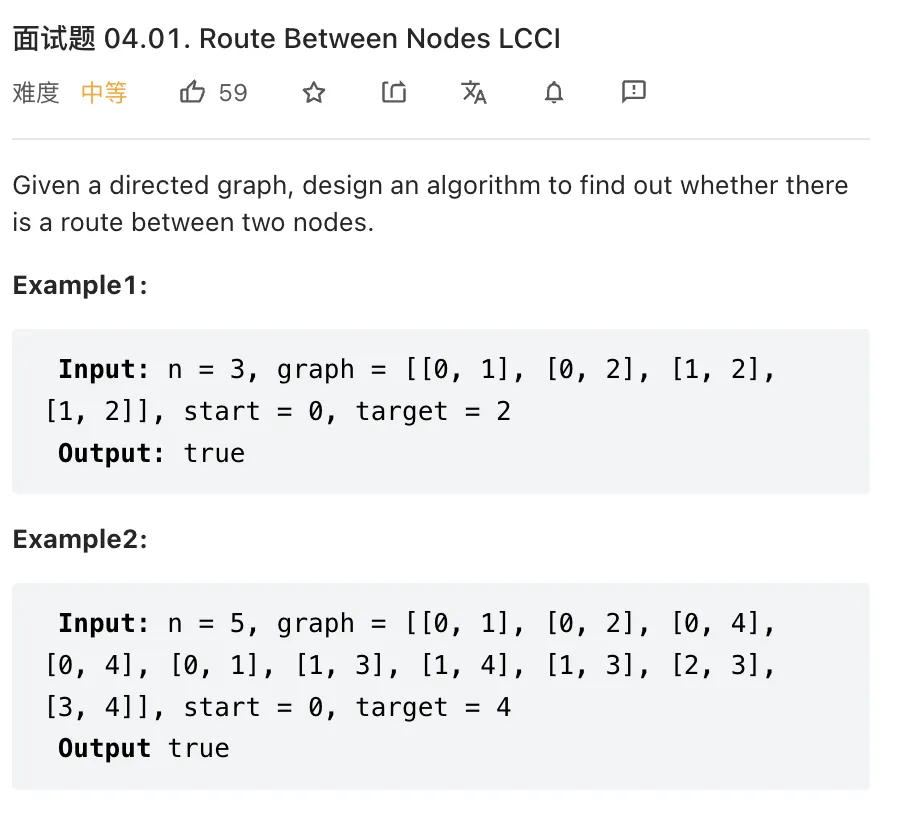
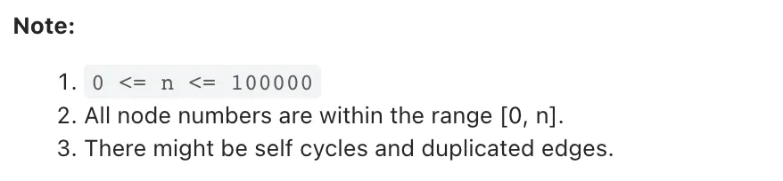

面试题 04.01. Route Between Nodes LCCI
Question


✍🏽 My Solution
🧠 Thought Process
- Why did I choose this particular implementation?
- 王爭-鄰接表
Solution #1 [王爭-DFS鄰接表]
执行用时：29 ms, 在所有 Java 提交中击败了47.47%的用户
内存消耗：86.2 MB, 在所有 Java 提交中击败了26.44%的用户
class Solution {
private boolean[] visited;
private HashSet<Integer>[] adj;
private boolean found = false;
public boolean findWhetherExistsPath(int n, int[][] graph, int start, int target) {
visited = new boolean[n];
adj = new HashSet[n];
for (int i = 0; i < n; i++) {
adj[i] = new HashSet<Integer>();
}
for (int i = 0; i < n; i++) {
if (!adj[graph[i][0]].contains(graph[i][1])) {
adj[graph[i][0]].add(graph[i][1]);
}
}
dfs(start, target);
return found;
}
private void dfs(int cur, int target) {
if (found) return;
if (cur == target) {
found = true;
return;
}
visited[cur] = true;
for (Integer next : adj[cur]) {
if (!visited[next]) {
dfs(next, target);
}
}
}
}
Explanation (in my words)
- How does their solution work?
- 思路還不是很清晰 要再想一下